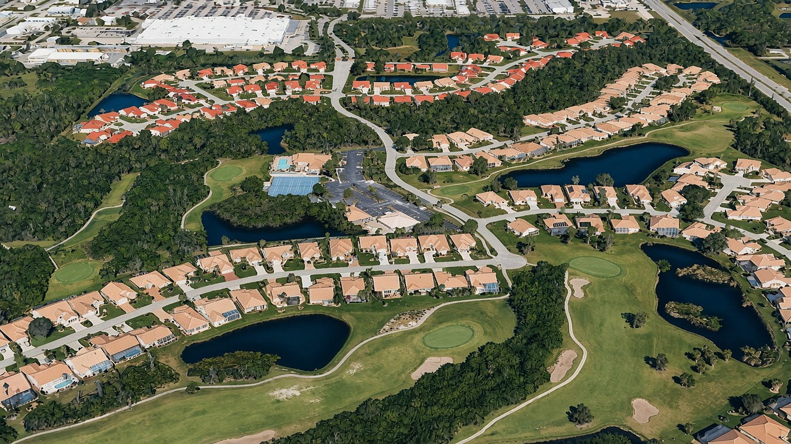
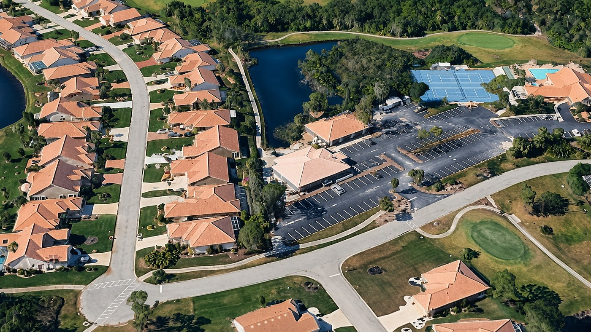

Draft preview for review. Not published. New Page for /explore/englewood/oyster-creek/. Goes live 2026-12-09. Images shown from local copies. Rollout batch

Explore · Englewood · Oyster Creek
Oyster Creek is a gated golf community of about 405 homes on the Charlotte County side of Englewood, built between 1991 and 2006 around an 18-hole executive course.
It offers a settled, mid-priced neighborhood a short drive from the beaches. Here is what the county record and the golf club show, and what to check before you buy. For the wider area, see Explore Englewood.
The short version
Gated golf. An 18-hole executive course inside the gate.
1990s homes. Built 1991 to 2006; median 1996.
Mid-priced. Median qualified home sale about $348,000.
Charlotte County. ZIP 34224, Englewood address.
355
single-family homes
50
attached villas
$293,000
median county just value
$348,000
median qualified home sale
Source: Charlotte County Property Appraiser, parcel file and subdivision list (downloaded Nov 20, 2026); Oyster Creek Golf Club.
Golf
A shorter course with plenty of par 3s.
Oyster Creek Golf Club was built in 1990. It plays 3,976 yards with six par 4 holes and twelve par 3 holes, and has a pro shop, snack bar, and putting green. The club takes public tee times and runs leagues. Ask the seller and the association how golf access works for owners.
Source: Oyster Creek Golf Club.

An Oyster Creek street of single-family homes near the clubhouse.
Homes
Single-family homes, villas, and a few condos.
The main Oyster Creek plat holds 355 single-family homes, 50 attached villas, and 14 vacant lots. Two small neighbors add condos and villas: the Village at Oyster Creek and Landmark Landings on Oyster Creek. The median single-family home has about 1,726 square feet of living area, 34 percent have a pool, and 19 percent carry the county's waterfront flag.
| Measure | Value |
|---|---|
| Single-family homes | 355 |
| Attached villas | 50 |
| Years built | 1991 to 2006 |
| Median county just value, homes | $293,000 |
| Middle half of home just values | $262,000 to $327,000 |
| Qualified home sales, 2025 and 2026 | 38 (median $348,000) |
County figures come from the Charlotte County Property Appraiser's public parcel file (downloaded November 20, 2026). Just value is the county's market value estimate on the latest certified roll, not an appraisal or a list price. Sale figures use each parcel's most recent recorded sale when that sale was qualified and dated 2025 or 2026.
Source: Charlotte County Property Appraiser, parcel file and subdivision list (downloaded Nov 20, 2026).
Before you buy
Homes from the 1990s need a close look.
Most homes here are 20 to 35 years old.
Check roof age, AC, and wind protection.
Get dues, rules, and what golf access costs.
Pull the FEMA zone and get insurance quotes.
Our insurance guide covers what drives premiums.
Source: FEMA Flood Map Service Center.
FAQs
Where is Oyster Creek in Englewood?
Oyster Creek is on the Charlotte County side of Englewood, ZIP 34224, around Oriole Boulevard. The golf club's address is 6651 Oriole Boulevard.
Is Oyster Creek gated?
Yes. The golf club describes its course as nestled inside a gated community.
Does Oyster Creek have a golf course?
Yes. Oyster Creek Golf Club opened in 1990. It plays 3,976 yards with six par 4 holes and twelve par 3 holes, and has a pro shop, snack bar, and putting green. Membership and play are separate from home ownership, so ask how the two relate.
What do homes in Oyster Creek cost?
The median county just value of a single-family home is about $293,000. The 38 qualified single-family sales in 2025 and 2026 had a median of about $348,000.
Is the Oyster Creek mobile home park part of the same community?
No. Oyster Creek Mobile Home Park is a separate plat nearby, with about 79 manufactured homes on owned lots. Its 9 qualified sales in 2025 and 2026 had a median of about $130,000.
Looking at Oyster Creek?
We can pull recent sales and association details for any home here. Call or text The Helgemo Team at (941) 770-2275.
The office is at 320 Cross Street, Punta Gorda, Florida 33950. You can also meet Brian Helgemo or read more about the team.
Sources: Charlotte County Property Appraiser, parcel file and subdivision list (downloaded Nov 20, 2026); Oyster Creek Golf Club; FEMA Flood Map Service Center. Checked November 20, 2026.